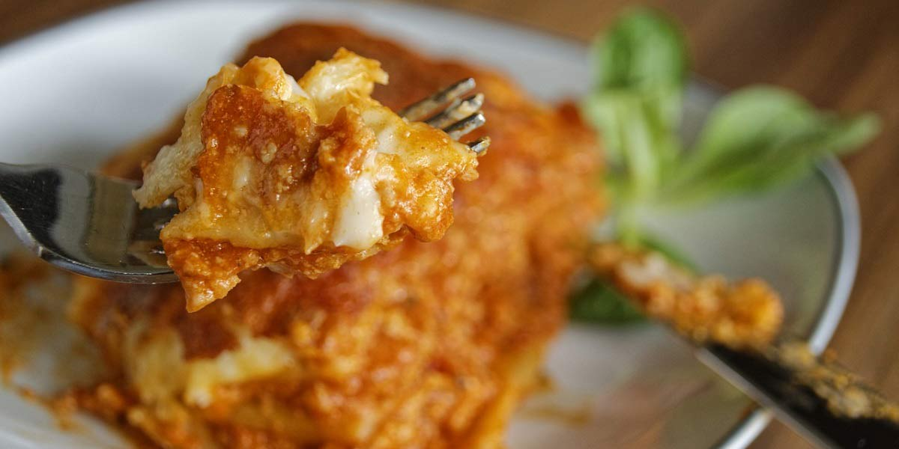

Beef Lasagne
Recipe Specification
Ingredients List
| Ingredients | Quantity |
|---|---|
| Mince Beef | 750g |
| Vegetable Oil | 40ml |
| White Onion | 2x1 |
| Dried Thyme | 1½ tsp |
| Tomato Sauce | 800g |
| Beef Stock | 200ml |
| Béchamel Sauce | 600g |
| Mozzarella Ball | 1x125g |
| Mature Cheddar Cheese | 250g |
| Dry Lasagne Sheets | 6 Sheets |
| Salt & Pepper | To Taste |
Yield: 6-8 portions
Preparation
- Peel and finely dice white onion.
- Place lasagne sheets in lukewarm water so that they become soft. Seperate sheets to stop them sticking together.
- Grate mature cheddar cheese.
- Pre-heat oven to 170’C.
Cooking Instructions
- Place a large saucepan over a medium /high heat and add vegetable oil.
- Crumble mince beef into pan 250g at a time. Season with salt and pepper before browning off and draining of any excess fat. Repeat process until all meat is browned off.
- In the same pan, gently fry off onions for 5 minutes.
- Add thyme to the onions and cook for a further 3 minutes.
- Return beef to the pan and add tomato sauce and beef stock.
- Bring to the boil before reducing to the simmer and cooking for 30 minutes.
- Once sauce has thickened, remove pan from the heat and season to taste.
- Compile lasagne by using half the amount of beef mince and distributing it evenly at the bottom of 20cm baking dish. Next, apply 3 pasta sheets to the top of the mince and cut away any excess pasta to ensure a snug layer. On the following layer, apply half the amount of béchamel sauce evenly over the pasta. Tear the mozzarella ball and distribute equally over white sauce. Repeat this process again to create to layers to your lasagne. Top the lasagne off with the grated cheese and wipe the edges clean with a damp towel.
- place in the oven for 45 minutes. Allow to cool slightly before serving.

Serving Suggestions
Lasagne goes great with garlic bread..
Storing instructions
Allow to cool to room temperature. Consume within 4 days of making. Store in the fridge
Reheating Instructions
Portion out and place in the microwave for 2-3 minutes.